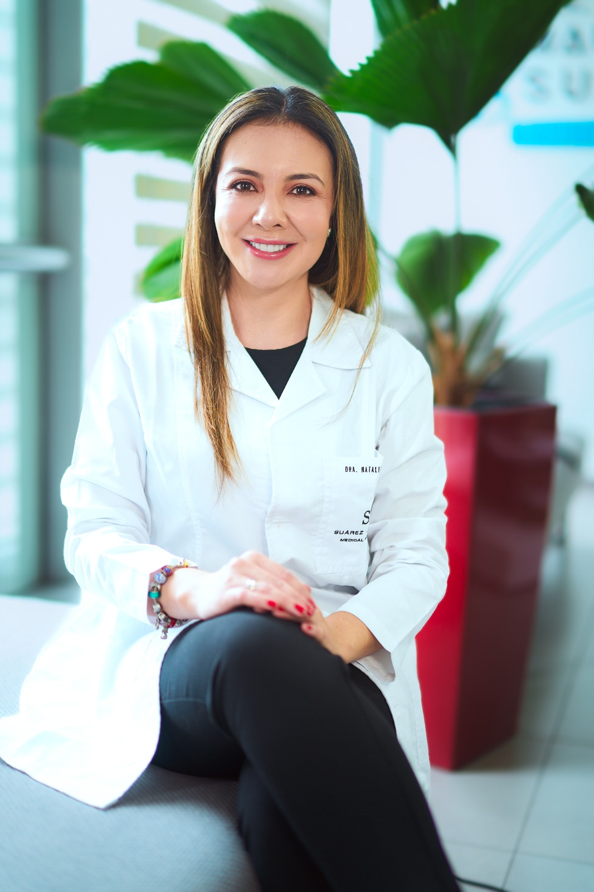
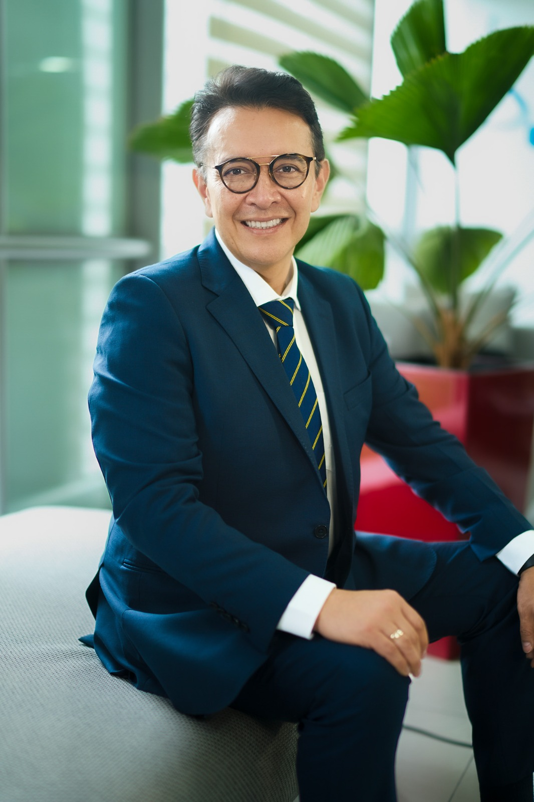

Dra. Natalie Herreros
Es una destacada profesional en el campo de la medicina estética, tricología y micro implante capilar, reconocida por su compromiso con la excelencia, la innovación y el cuidado personalizado de cada paciente. Apasionada por la evolución constante de su especialidad, la Dra. Herreros se mantiene a la vanguardia de los últimos avances científicos y tecnológicos en medicina estética y salud capilar, ofreciendo tratamientos adaptados a las necesidades individuales de cada paciente. Su experiencia en tricología y micro implante capilar le permite brindar soluciones avanzadas para el bienestar capilar, restaurando la confianza y mejorando la calidad de vida de quienes buscan alternativas médicas efectivas en este ámbito. Con un enfoque integral y una dedicación absoluta, la Dra. Natalie Herreros es sinónimo de profesionalismo, ética y excelencia en el campo de la medicina estética y capilar.
